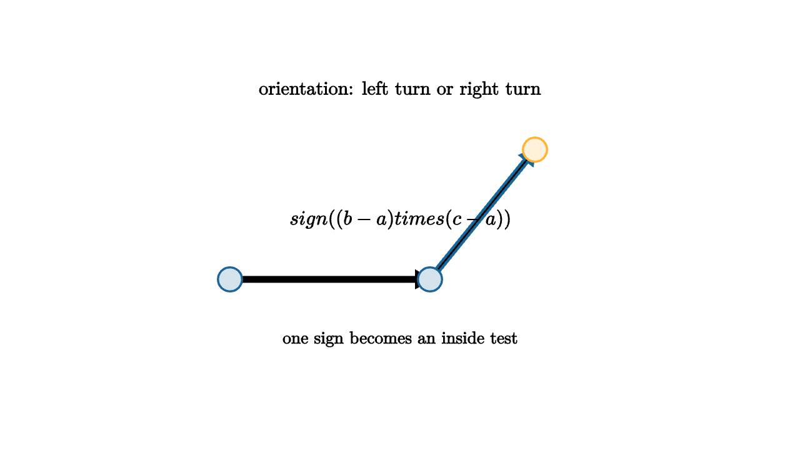

Before a renderer can shade a triangle, it must answer a smaller question: which side of an edge is this point on? The answer is an orientation test. Given two points forming a directed edge, a third point is on the left, on the right, or exactly on the line. That small sign test powers polygon winding, point-in-triangle tests, convex hulls, clipping, and collision detection.

source
let soft = |col, amount| lerp(WHITE, col, amount)
mesh diagram = [
center{1.35u} Text("orientation: left turn or right turn", 0.68),
stroke{BLACK, 2.5} Arrow(1.7l + 0.55d, 0.3r + 0.55d),
stroke{BLUE, 2.5} Arrow(0.3r + 0.55d, 1.35r + 0.75u),
center{1.7l + 0.55d} fill{soft(BLUE, 0.18)} stroke{BLUE, 2} Circle(0.12),
center{0.3r + 0.55d} fill{soft(BLUE, 0.18)} stroke{BLUE, 2} Circle(0.12),
center{1.35r + 0.75u} fill{soft(ORANGE, 0.18)} stroke{ORANGE, 2} Circle(0.12),
center{0.05u} Tex("sign((b-a) \\times (c-a))", 0.72),
center{1.15d} Text("one sign becomes an inside test", 0.62)
]The determinant behind this test measures signed area. If the signed area of triangle abc is positive, the path from a to b to c turns left. If it is negative, it turns right. If it is zero, the three points are collinear. In practice this is more useful than a slope comparison because vertical lines, tiny denominators, and coordinate frame changes do not need special cases.
For raster graphics, orientation becomes an edge function. A pixel center belongs to a triangle when it lies on the same side of all three directed edges. Hardware rasterizers make this idea fast, but the math is still the classroom determinant. Each edge draws a half-plane, and the triangle is the intersection of three half-planes.
This is also where numerical care first enters the story. A point that is clearly to the left in a drawing may produce a tiny determinant on a computer if the coordinates are nearly collinear or very large. Robust geometry libraries spend serious effort on this one sign. If the sign flips because of roundoff, a polygon can tear, a collision test can miss, or a triangle can flicker along an edge. The humble orientation predicate becomes a contract between continuous geometry and finite arithmetic.
The determinant form is
The formula is the signed area of the parallelogram spanned by $b-a$ and $c-a$. Half of its absolute value is the area of triangle $abc$. The sign remembers clockwise versus counterclockwise order.
source
let soft = |col, amount| lerp(WHITE, col, amount)
"Edges"
mesh tri = [
fill{soft(BLUE, 0.14)} stroke{BLUE, 2.4} Polygon([1.7l + 0.7d, 1.45r + 0.55d, 0.25r + 1.15u]),
center{1.25u} Text("three directed edges", 0.62)
]
mesh probe = center{0.15r + 0.25u} fill{soft(ORANGE, 0.2)} stroke{ORANGE, 2} Circle(0.14)
play [Grow(0.7, [&tri]), Fade(0.7, [&probe])]
"Half-Planes"
tri = [
fill{soft(GREEN, 0.16)} stroke{GREEN, 2.4} Polygon([1.7l + 0.7d, 1.45r + 0.55d, 0.25r + 1.15u]),
stroke{GREEN, 2} Arrow(1.7l + 0.7d, 1.45r + 0.55d),
stroke{GREEN, 2} Arrow(1.45r + 0.55d, 0.25r + 1.15u),
stroke{GREEN, 2} Arrow(0.25r + 1.15u, 1.7l + 0.7d),
center{1.25u} Text("inside means same side three times", 0.62)
]
probe = center{0.15r + 0.25u} fill{soft(ORANGE, 0.2)} stroke{ORANGE, 2} Circle(0.14)
play Trans(1.0)
"Raster"
probe = [
center{1.05l + 0.15d} fill{soft(ORANGE, 0.22)} stroke{ORANGE, 2} Square(0.22),
center{0.65l + 0.05u} fill{soft(ORANGE, 0.22)} stroke{ORANGE, 2} Square(0.22),
center{0.25l + 0.18u} fill{soft(ORANGE, 0.22)} stroke{ORANGE, 2} Square(0.22),
center{0.15r + 0.38u} fill{soft(ORANGE, 0.22)} stroke{ORANGE, 2} Square(0.22),
center{1.0d} Text("pixel centers pass the same predicate", 0.62)
]
play Fade(0.8)The teacher move is to pause before optimizing. The orientation test is a geometric sentence, not just an arithmetic trick: "walking along this edge, does the point stand to my left?" Once students can say that sentence, barycentric coordinates, triangle filling, clipping, and convex hull algorithms feel like variations on a familiar act of sorting space into sides.
The lesson to keep: computational geometry often begins with a yes-or-no geometric predicate. Orientation is the first one worth mastering because it converts pictures into signs. A sign can be tested quickly, animated clearly, and composed into larger algorithms.